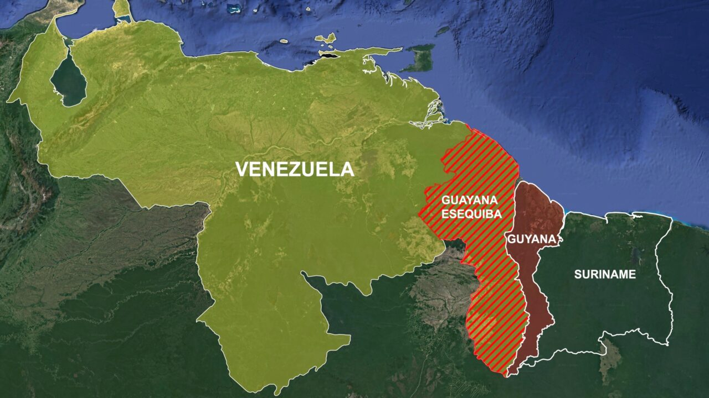

O Essequibo é uma vasta região situada no oeste da Guiana,
reivindicada tanto pela Guiana quanto pela Venezuela.
Cobrindo cerca de 159 mil quilômetros quadrados...
30/09/2024 às 07:19
No século XVII, a Guiana foi um alvo de colonização por várias potências europeias.
A região, inicialmente habitada por indígenas, começou a ser colonizada por holandeses, franceses e britânicos.
Durante esse período, a Venezuela, então parte do Império Espanhol, também reivindicava a área.
Em 1899, um tribunal internacional decidiu em favor da Grã-Bretanha,
atribuindo a maior parte do território ao que era conhecido como Guiana Britânica.
Contudo, essa decisão gerou controvérsias.
A Venezuela alegou que o julgamento foi influenciado por fatores políticos e pressões britânicas,
considerando a decisão como um ato de imperialismo.
Com a independência da Guiana em 1966, a Venezuela reativou suas reivindicações sobre o Essequibo.
A região, que ocupa cerca de 159.000 km², é rica em recursos como ouro,
petróleo e vastas florestas tropicais, aumentando a importância estratégica da disputa.
A Venezuela, sob a liderança de Hugo Chávez e, posteriormente, Nicolás Maduro,
adotou uma postura mais assertiva em relação à questão,
buscando apoiar sua reivindicação em argumentos históricos e legais.
O governo venezuelano frequentemente destaca o Essequibo como parte de seu território,
alimentando nacionalismo e retórica política.
A questão foi levada à Organização das Nações Unidas (ONU),
que tem mediado a disputa ao longo das décadas.
Em 2018, a ONU decidiu que a disputa deveria ser analisada pelo Tribunal Internacional de Justiça (TIJ),
marcando um passo significativo rumo a uma resolução pacífica.
No entanto, a Venezuela tem mostrado resistência à jurisdição do tribunal,
alegando que a questão deve ser resolvida bilateralmente.
Além da dimensão territorial, o conflito tem implicações econômicas significativas para ambos os países.
A exploração de recursos naturais na região do Essequibo é vista como um motor potencial de crescimento.
Enquanto isso, a Guiana busca desenvolver suas indústrias de petróleo e mineração,
o que poderia trazer investimentos estrangeiros e criar empregos.